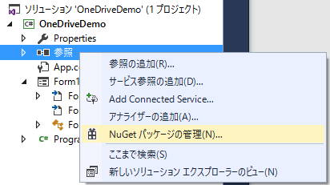
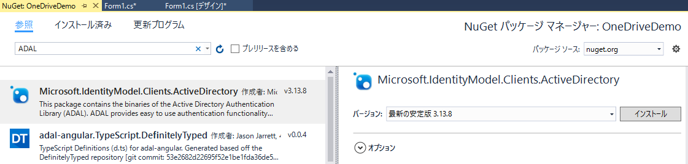
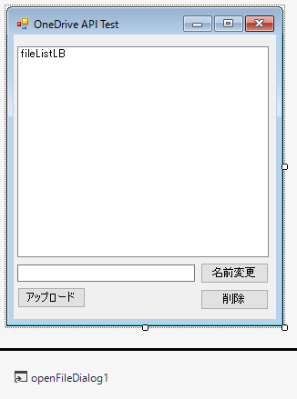
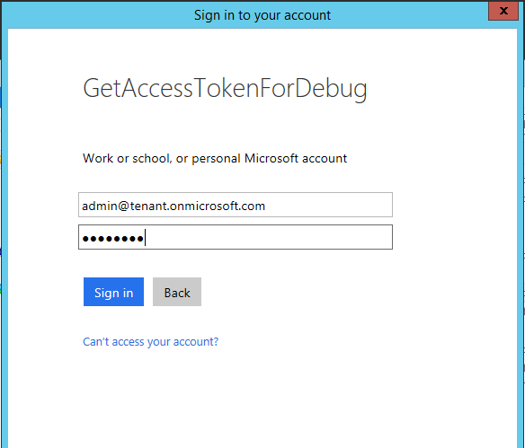
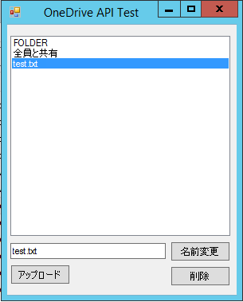

(※ 2016 年 12 月 29 日に Japan Office Developer Support Blog に公開した情報のアーカイブです。)
こんにちは、Office Developer サポートの森 健吾 (kenmori) です。
今回の投稿では、Microsoft Graph – OneDrive API を実際に C# で開発するエクスペリエンスをご紹介します。
ウォークスルーのような形式にしておりますので、慣れていない方も今回の投稿を一通り実施することで、プログラム開発を経験し理解できると思います。本投稿では、現実的な実装シナリオを重視するよりも、OneDrive API を理解するためになるべくシンプルなコードにすることを心掛けています。
例外処理なども含めていませんので、実際にコーディングする際には、あくまでこのコードを参考する形でご検討ください。
事前準備
以前の投稿 をもとに、Azure AD にアプリケーションの登録を完了してください。少なくとも以下の 2 つのデリゲートされたアクセス許可が必要です。
・Have full access to all files user can access
その上で、クライアント ID とリダイレクト URI を控えておいてください。
開発手順
1. Visual Studio を起動し、Windows フォーム アプリケーションを開始します。

3. ADAL で検索し、Microsoft.IdentityMode.Clients.ActiveDirectory をインストールします。

4. [OK] をクリックし、[同意する] をクリックします。

コントロール一覧
OneDriveTestForm フォーム
fileListLB リスト ボックス
fileNameTB テキスト ボックス
uploadBtn ボタン
renameBtn ボタン
deleteBtn ボタン
openFileDialog1 オープン ファイル ダイアログ
7. プロジェクトを右クリックし、[追加] – [新しい項目] をクリックします。
1 2 3 4 5 6 7 8 9 10 11 12 13 14 15 16 17 18 19 20 21 22 23 24 25 26 27 28 29 30 31 32 using Newtonsoft.Json; using System.Collections.Generic; namespace OneDriveDemo { public class MyFile { public string name { get; set; } // 以下のプロパティは今回使用しませんが、デバッグ時に値を見ることをお勧めします。 public string webUrl { get; set; } public string createdDateTime { get; set; } public string lastModifiedDateTime { get; set; } } public class MyFiles { public List<MyFile> value; } // ファイル移動時に使います。 public class MyParentFolder { public string path { get; set; } } public class MyFileModify { public string name { get; set; } // ファイル移動時に使います。 public MyParentFolder parentReference { get; set; } } }
補足
1 2 [JsonProperty("name")] public string FileName { get; set; }
10. フォームのコードに移動します。
11. using を追記しておきます。
1 2 3 4 5 6 7 8 9 10 using Microsoft.IdentityModel.Clients.ActiveDirectory; using Newtonsoft.Json; using System; using System.IO; using System.Net.Http; using System.Net.Http.Headers; using System.Text; using System.Threading.Tasks; using System.Windows.Forms; using OneDriveDemo; //9. で作成した MyFile.cs 内の名前空間
12. フォームのメンバー変数に以下を加えます。
1 2 3 4 5 6 7 const string resource = "https://graph.microsoft.com"; const string clientid = "xxxxxxxx-xxxx-xxxx-xxxx-xxxxxxxxxxxx"; const string redirecturi = "urn:getaccesstokenfordebug"; // ADFS 環境で SSO ドメイン以外のテナントのユーザーを試す場合はコメント解除 // const string loginname = "admin@tenant.onmicrosoft.com"; string AccessToken;
13. フォームのデザインでフォームをダブルクリックし、ロード時のイベントを実装します。
1 2 3 4 5 6 7 8 9 10 11 12 13 14 15 16 17 18 19 20 21 22 23 24 25 26 27 28 29 30 31 32 33 34 35 36 37 38 39 40 41 42 43 44 45 private async void Form1_Load(object sender, EventArgs e) { AccessToken = await GetAccessToken(resource, clientid, redirecturi); DisplayFiles(); } // アクセス トークン取得 private async Task<string> GetAccessToken(string resource, string clientid, string redirecturi) { AuthenticationContext authenticationContext = new AuthenticationContext("https://login.microsoftonline.com/common"); AuthenticationResult authenticationResult = await authenticationContext.AcquireTokenAsync( resource, clientid, new Uri(redirecturi), new PlatformParameters(PromptBehavior.Auto, null) // ADFS 環境で SSO ドメイン以外のテナントのユーザーを試す場合はコメント解除 //, new UserIdentifier(loginname, UserIdentifierType.RequiredDisplayableId) ); return authenticationResult.AccessToken; } // ファイル一覧表示 private async void DisplayFiles() { using (HttpClient httpClient = new HttpClient()) { httpClient.DefaultRequestHeaders.Authorization = new AuthenticationHeaderValue("Bearer", AccessToken); HttpRequestMessage request = new HttpRequestMessage( HttpMethod.Get, new Uri("https://graph.microsoft.com/v1.0/me/drive/root/children?$select=name,weburl,createdDateTime,lastModifiedDateTime") ); var response = await httpClient.SendAsync(request); MyFiles files = JsonConvert.DeserializeObject<MyFiles>(response.Content.ReadAsStringAsync().Result); fileListLB.Items.Clear(); foreach (MyFile file in files.value) { fileListLB.Items.Add(file.name); } } if (!string.IsNullOrEmpty(fileNameTB.Text)) { fileListLB.SelectedItem = fileNameTB.Text; } }
14. fileListLB の SelectedIndexChanged イベントをダブルクリックして、処理を実装します。
1 2 3 4 5 // リスト ボックスで選択したファイルをテキスト ボックスに同期 private void fileListLB_SelectedIndexChanged(object sender, EventArgs e) { fileNameTB.Text = ((ListBox)sender).SelectedItem.ToString(); }
15. uploadBtn をダブルクリックして、ボタンクリックイベントを実装します。
1 2 3 4 5 6 7 8 9 10 11 12 13 14 15 16 17 18 19 20 21 22 23 24 25 26 27 28 29 30 31 32 33 34 35 36 37 38 39 40 // ファイル アップロード処理 private async void uploadBtn_Click(object sender, EventArgs e) { if (openFileDialog1.ShowDialog() == DialogResult.OK) { fileNameTB.Text = openFileDialog1.FileName.Substring(openFileDialog1.FileName.LastIndexOf("\\") + 1); using (HttpClient httpClient = new HttpClient()) { httpClient.DefaultRequestHeaders.Authorization = new AuthenticationHeaderValue("Bearer", AccessToken); httpClient.DefaultRequestHeaders.TryAddWithoutValidation("Content-Type", "octet-stream"); HttpRequestMessage request = new HttpRequestMessage( HttpMethod.Put, new Uri(string.Format("https://graph.microsoft.com/v1.0/me/drive/root:/{0}:/content", fileNameTB.Text)) ); request.Content = new ByteArrayContent(ReadFileContent(openFileDialog1.FileName)); var response = await httpClient.SendAsync(request); MessageBox.Show(response.StatusCode.ToString()); } DisplayFiles(); } } // ローカル ファイルの読み取り処理 private byte[] ReadFileContent(string filePath) { using (FileStream inStrm = new FileStream(filePath, FileMode.Open)) { byte[] buf = new byte[2048]; using (MemoryStream memoryStream = new MemoryStream()) { int readBytes = inStrm.Read(buf, 0, buf.Length); while (readBytes > 0) { memoryStream.Write(buf, 0, readBytes); readBytes = inStrm.Read(buf, 0, buf.Length); } return memoryStream.ToArray(); } } }
16. renameBtn をダブルクリックして、クリックイベントを実装します。
1 2 3 4 5 6 7 8 9 10 11 12 13 14 15 16 17 18 19 20 21 22 23 24 25 // ファイル名の変更処理 private async void renameBtn_Click(object sender, EventArgs e) { foreach (string fileLeafRef in fileListLB.SelectedItems) { using (HttpClient httpClient = new HttpClient()) { httpClient.DefaultRequestHeaders.Authorization = new AuthenticationHeaderValue("Bearer", AccessToken); httpClient.DefaultRequestHeaders.TryAddWithoutValidation("Content-Type", "application/json"); HttpRequestMessage request = new HttpRequestMessage( new HttpMethod("PATCH"), new Uri(string.Format("https://graph.microsoft.com/v1.0/me/drive/root:/{0}", fileLeafRef)) ); MyFileModify filemod = new MyFileModify(); filemod.name = fileNameTB.Text; request.Content = new StringContent(JsonConvert.SerializeObject(filemod), Encoding.UTF8, "application/json"); var response = await httpClient.SendAsync(request); MessageBox.Show(response.StatusCode.ToString()); } } DisplayFiles(); }
17. deleteBtn をダブルクリックして、クリックイベントを実装します。
1 2 3 4 5 6 7 8 9 10 11 12 13 14 15 16 17 18 19 20 // ファイル削除処理 private async void deleteBtn_Click(object sender, EventArgs e) { foreach (string fileLeafRef in fileListLB.SelectedItems) { using (HttpClient httpClient = new HttpClient()) { httpClient.DefaultRequestHeaders.Authorization = new AuthenticationHeaderValue("Bearer", AccessToken); HttpRequestMessage request = new HttpRequestMessage( HttpMethod.Delete, new Uri(string.Format("https://graph.microsoft.com/v1.0/me/drive/root:/{0}", fileLeafRef)) ); var response = await httpClient.SendAsync(request); MessageBox.Show(response.StatusCode.ToString()); } } fileNameTB.Text = ""; DisplayFiles(); }
18. ソリューションをビルドして、動作を確認しましょう。
最初にログイン画面が表示され、ログインしたユーザーでアクセス トークンを取得します。

該当ユーザーの OneDrive for Business のルート ディレクトリのファイル一覧が表示されます。

該当フォルダーで、ファイルのアップロードや名前変更、削除などの操作をお試しください。
参考情報
以下は、Microsoft Graph における OneDrive API の参考サイトです。
タイトル : Microsoft Graph でのファイルの作業https://graph.microsoft.io/ja-jp/docs/api-reference/v1.0/resources/onedrive
OneDrive API のリファレンスについては、以下のページをご確認いただき、OneDrive APIが持つ様々なメソッドをお試しください。
タイトル : Develop with the OneDrive APIhttps://dev.onedrive.com/README.htm#
現時点では、OneDrive API で実装できる範囲について、OneDrive コンシューマ版と OneDrive for Business には相違があります。詳細は以下をご確認ください。
タイトル : Release notes for using OneDrive API with OneDrive for Business and SharePointhttps://dev.onedrive.com/sharepoint/release-notes.htm
以下は、OneDrive API を紹介した Channel9 の動画になります。
タイトル : Office Dev Show - Episode 38 - OneDrive APIs in the Microsoft Graphhttps://channel9.msdn.com/Shows/Office-Dev-Show/Office-Dev-Show-Episode-38-OneDrive-APIs-in-the-Microsoft-Graph
Json.NET に関するドキュメントは以下をご参考にしてください。
タイトル : Json.NET Documentationhttp://www.newtonsoft.com/json/help/html/Introduction.htm
タイトル : Serializing and Deserializing JSONhttp://www.newtonsoft.com/json/help/html/SerializingJSON.htm
別投稿に記載した通り、開発工数削減のため、アプリケーション開発前に Graph Explorer, Fiddler や Postman などを使用して、あらかじめ使用する REST を確立しておくことをお勧めします。デバッグ方法については、以下をご参考にしてください。
タイトル : [WebAPI]Microsoft Graph を使用した開発に便利なツール群https://officesupportjp.github.io/blog/(WebAPI)Microsoft Graph を使用した開発に便利なツール群/
今回の投稿は以上です。
本情報の内容 (添付文書、リンク先などを含む) は、作成日時点でのものであり、予告なく変更される場合があります。